CIALA NIEBIESKIE
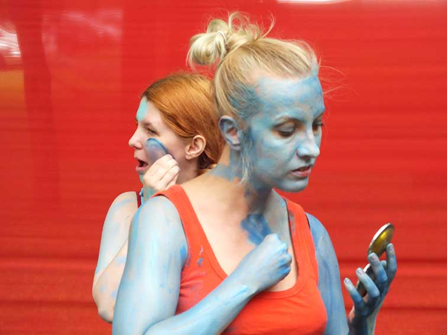
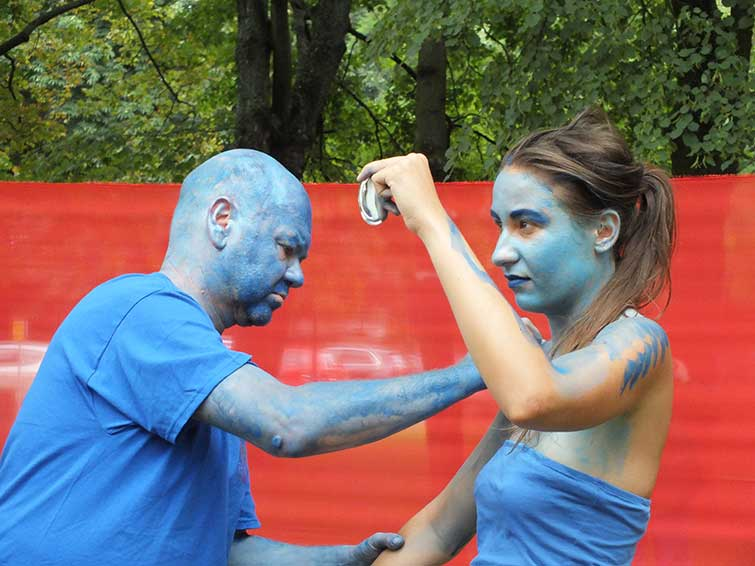
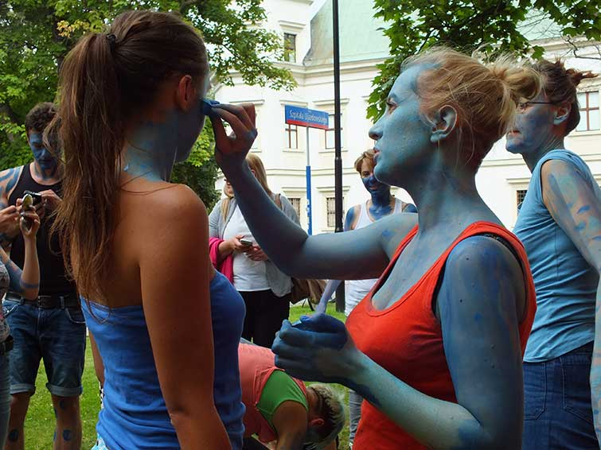
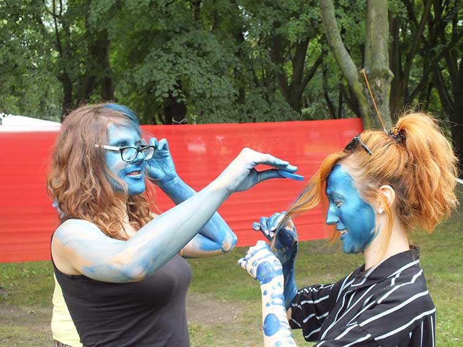
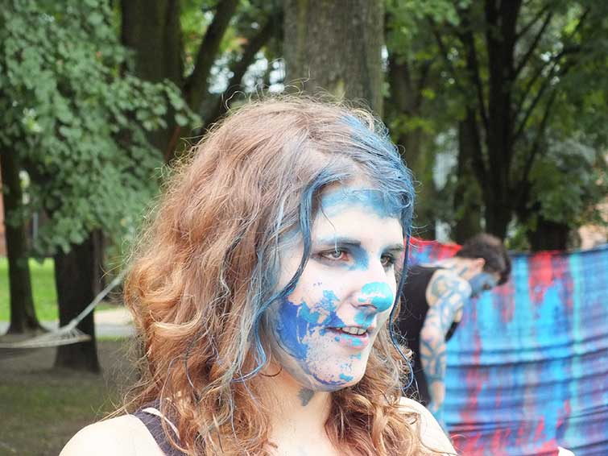
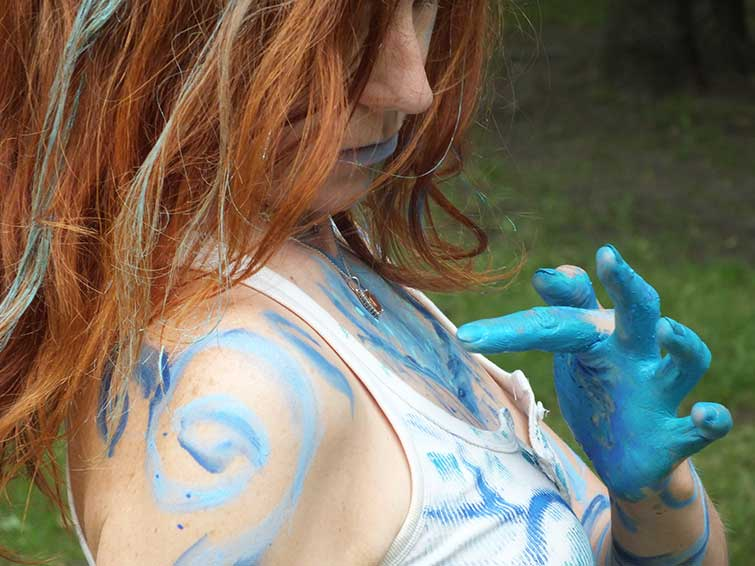
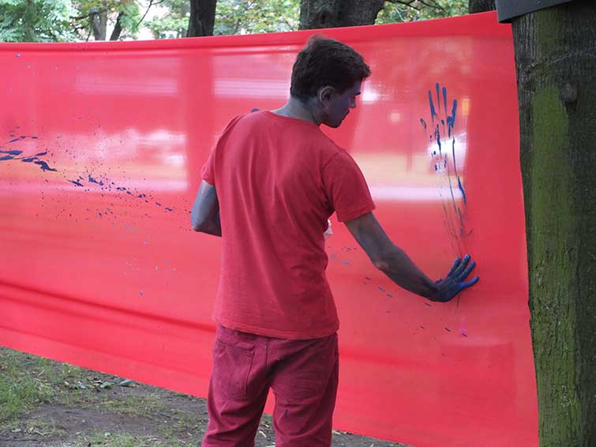
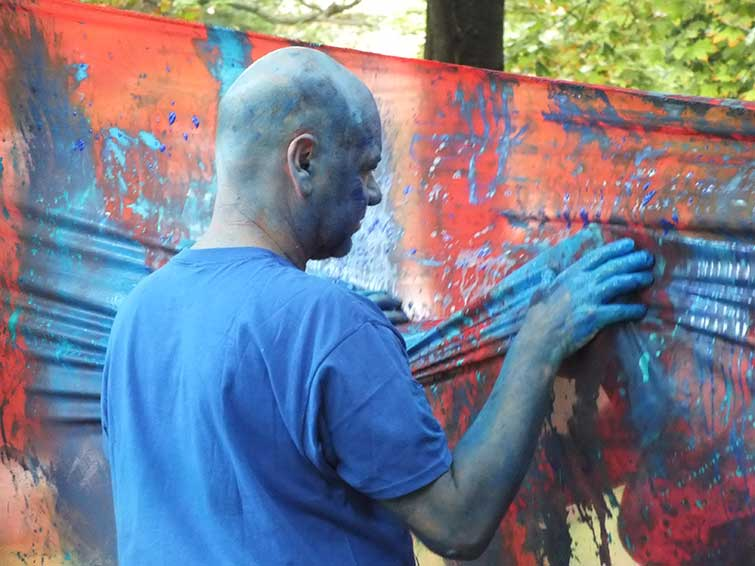
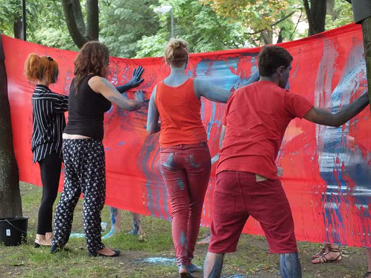
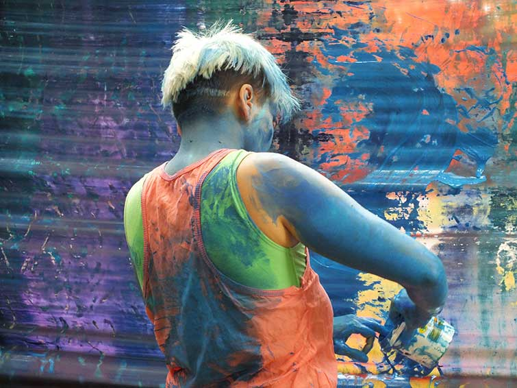
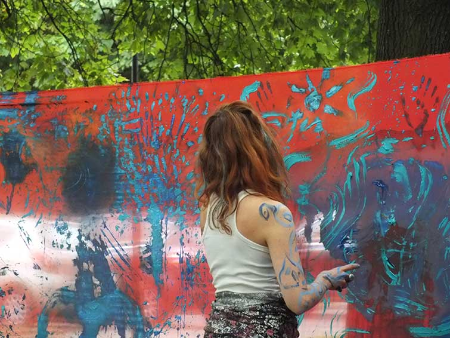
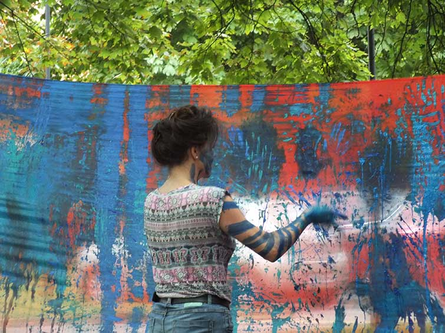
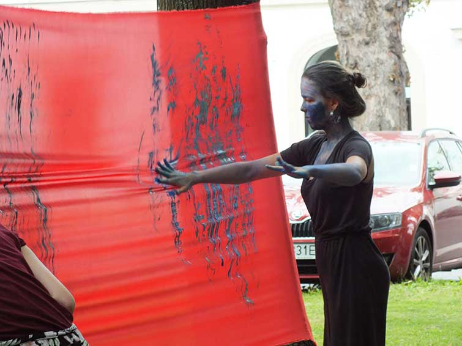
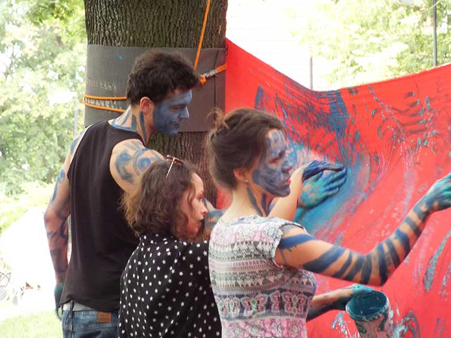
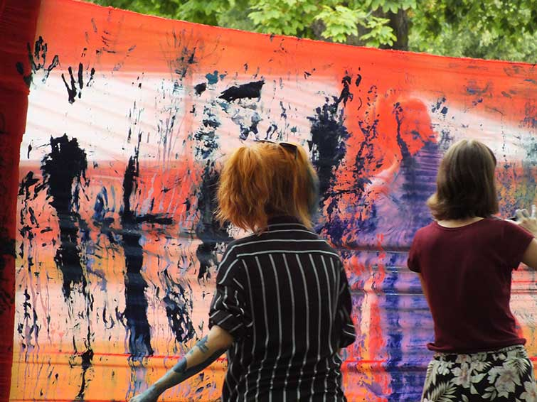
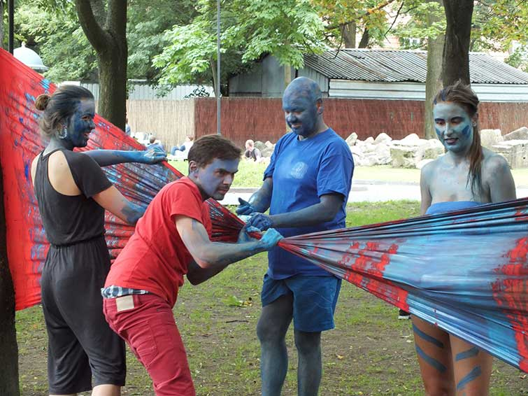
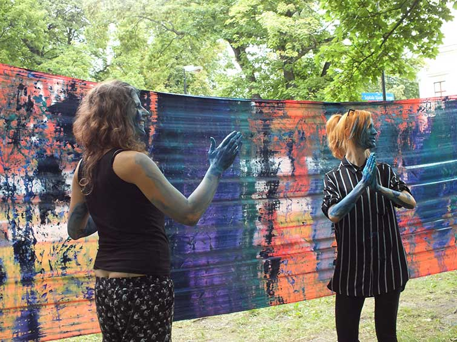
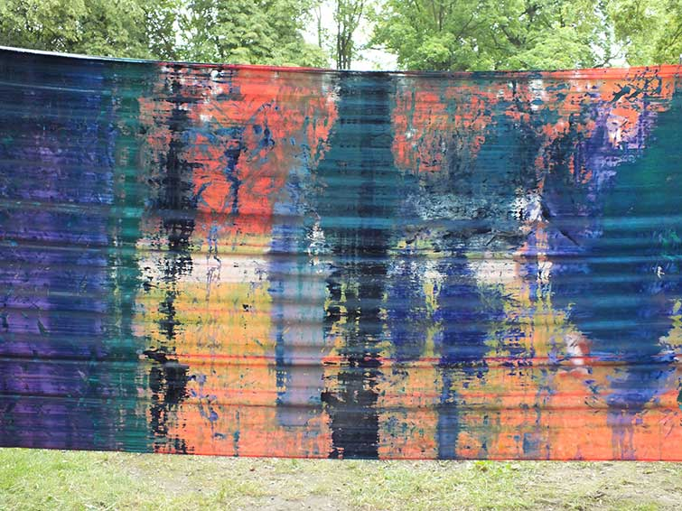
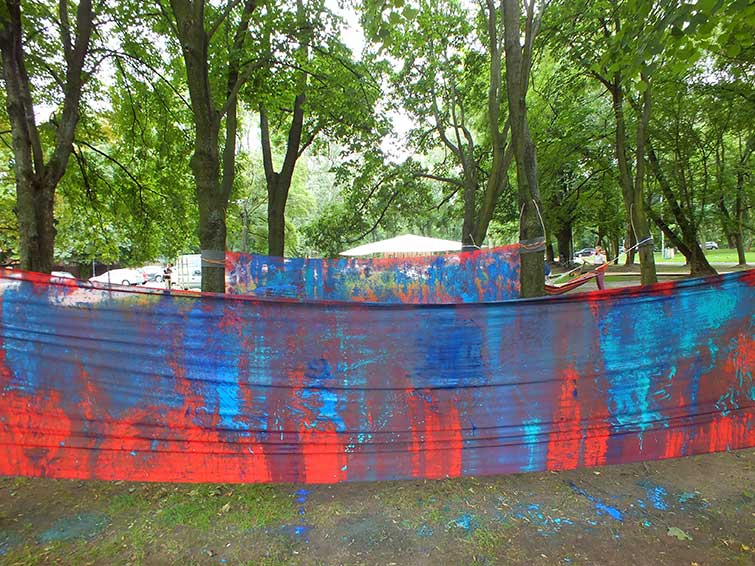
Warsztaty dla doroslych w cyklu PLENEROW KREATYWNYCH odbywajacych sie w lipcu i sierpniu 2016 w Centrum Sztuki Wspolczesnej. Podczas warsztatow performance prowadzonych przez Izabele Chamczyk pt. "Ciala niebieskie" mozna bylo stac sie czescia obrazu, jednoczesnie stwarzajac go i uswiadamiajac sobie proces tworczy. W przestrzeni parku, z wykorzystaniem tiulu, farb i ciala wykreowac wyjatkowe prace. Poczuc malarstwo na wlasnej skorze, zmniejszyc dystans pomiedzy nami, a ta dziwna sztuka wspolczesna.